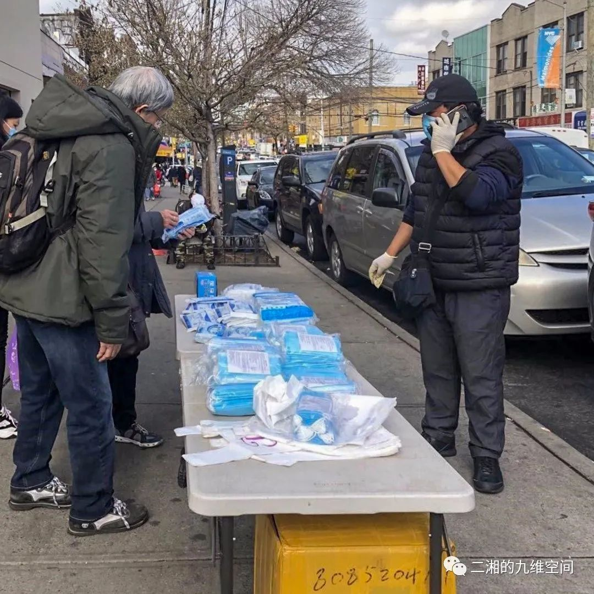
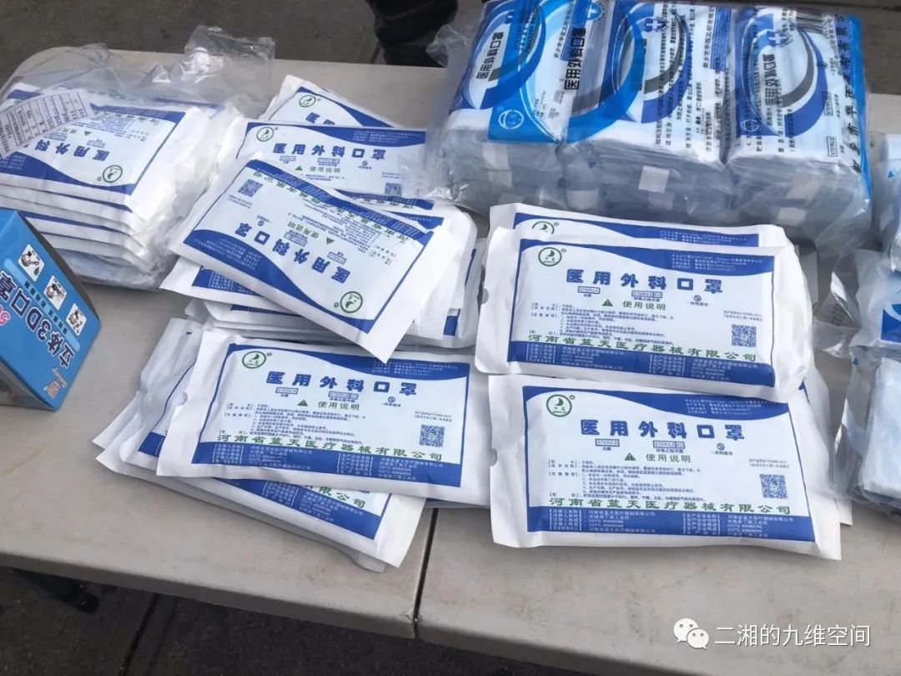
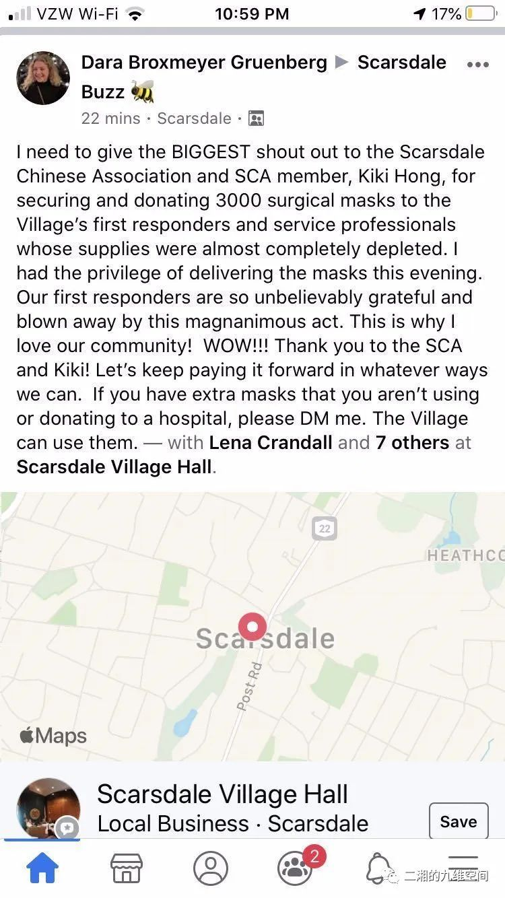

我在海外 | 美国社区还基本正常，我不回去给中国造成负担
原文链接 备份链接 中国用一种决绝的态度去处理疫情的防控，效果不错，而美国刚刚开始不久，最后效果怎样，有待观察。 口述 | James Zhou 整理 | 刘朝晖 上个周末，晴空万里。我在家里包了点馄饨，从新泽西的家中开车赶往30英里外 …
作者近照
这是纽约的一个朋友写的情况，其实随着疫情的蔓延，美国许多医院都出现了口罩等医护用品的短缺。好友梅玫在硅谷帮忙收集民众捐赠的口罩送到医院，我在的南加州也有TOC在组织捐款捐口罩给当地医院。前一阵大学同学给我们北美的同学寄了一批口罩。昨天，校友行者天涯说要捐赠2000个口罩，真是雪中送炭，我赶紧告诉梅玫，南加北加各一半，感谢国内的亲朋好友！—二湘
口罩！口罩！
文／纽约桃花
随着疫情的蔓延，口罩已成为纽约目前紧缺的产品。
记得今年大年三十前的那天，就是武汉封城的头天，我们跑了好几个地方买了700多只N95的专业口罩寄往南京。当时口罩每15-20一盒，我们买了几十盒堆满了厨房的桌子，一边装箱一边数。大年三十那个晚上，朋友家聚会，我们因为要去联邦快递寄送口罩，晚会也迟到了。晚会上，当朋友们得知我们刚花了980美金的邮寄费寄口罩回国，还觉得惊讶。我们当时行动算是很快的，几天后，当大批的华人开始买口罩寄回国，导致美国口罩告急的时候，我们联邦快递的口罩已经到达中国边境。
随后武汉封城、寄往国内的物品都开始滞留在海关，直到两个星期后才到达我们在南京的亲戚家中。亲戚马上将口罩送往南京的医院，因为很多医护人员急需口罩。
不过两个月的功夫，纽约疫情开始扩散，纽约州和纽约市区也开始封州封城，我们纽约人也面临方式武汉民众的境地，急需口罩，尤其这里很多医院的医护人员更是需要口罩。
回想当时我们在春节晚会上的时候包饺子过年的时候，谈论的最多的就是国内的疫情和武汉人民的生死哀痛。当时我们谁都没有想到今天我们面临同样的困境。
好在，国内的亲友们得知了纽约疫情蔓延的情况，都纷纷表示给我们寄口罩。前几天，我们的一个好友接到家里寄来的几百只口罩，马上通知我们大家去她家的邮箱取口罩。同时，她也把上百只口罩捐献给社区教会，再由教会送日社区警察局。
昨晚上，我在北京的一个好友也微信给我说要寄口罩给我。我听了非常感动，内心被这份关怀温暖了很久。其实，呆在家中的我并不需要口罩，但我知道纽约的医护人员，警察等都需要口罩，想尽力捐献口罩给他们。不过好友说，国内限制口罩的邮寄，每次只能寄100只。我听了无语，当初美国华人往国内寄送口罩每一箱都成百上千，连联邦快递的工作人员都跟我说，每天都是寄口罩的接应不暇，每次光寄送费用都是上千。

纽约缺乏口罩的消息让很多好人往这边寄口罩的同时，也让很多华人商贩觉得有利可图，开始在纽约卖高价口罩。

上图：布鲁克林唐人街八大道街头卖口罩的小贩贩卖的口罩，一包$40-50 美金50个，单个包装（印着河南出）每个一美金。
网上也出现了趁火打劫的骗子，利用美国的疫情来骗人。
然而，纽约近郊疫情重灾区的华人们却开始积极行动，号召社区内的华人捐献口罩给医院和警察局。
我们附近社区的一个美国妻子在社交网上呼吁大家捐献口罩给他做医生先生所在的医院，因为他们居然没有口罩来保护自己。她在家门口放置了一个捐献箱，让大家把口罩放在里面。

看到这个帖子，我们居住的社区里很多华人都到处找口罩捐献，也发起了号召大家捐献口罩的网上集资活动。活动的发起人说：“纽约的医护人员非常缺乏防护物资，我们采购了5000N95口罩和10000医用口罩，等收到货物就送到对接的医院：西奈山医院妇产科MSKCC- Urgent Care/UCC（ER）史隆-凯特琳癌症纪念医院急诊部NYPQueens Hospital in Flushing Queens纽约长老会医院法拉盛分Westchester Medical Center-威郡医疗中心（威郡目前最大的Covid-19诊治中心）”
Edgemont华人协会在两天时间几乎是挨家挨户地收集到了1800个口罩，募集善款$8500，并第一时间捐赠给了社区的警察局，医院，邮局和加油站。

我们郡的Scarsdale社区在脸书上公开赞扬社区的美籍华人给社区捐赠了3000个口罩。
当初武汉疫情的时候，全世界的华人搜罗了20亿口罩运到中国。现在，欧洲和美加疫情蔓延，口罩告急，华人们再次上阵，为保卫自己的家园、社区和居住国捐献医疗器材和口罩。就像有人说的那样，疫情告急时，武汉打上半场，欧美打下半场，海外华人打全场！
在疫情在美国蔓延开始，美国人不理解亚洲人的口罩文化，觉得戴口罩的是病人。如今，纽约州作为美国疫情重灾区开始重视口罩的使用。不过，因为美国大部分的口罩都被寄送国外，导致了口罩的紧缺。

纽约长老会医院外科系主任克雷格·史密斯博士在发给同事的备忘录中说，该医院“每天要消耗4万个这样的口罩，估计高峰期每天要消耗7万个口罩“。
然而，N95口罩并不是唯一需要的口罩。很多医院给医户配备了一只口罩，告诉他们只有在有症状的情况下才能使用”。在这种情况下，医护们只好用消毒剂将喷洒在口罩上接着用。但谁都知道，重复使用口罩可能会感染尚未感染病毒的患者。专家们说，口罩和呼吸器对民众的自我保护的效果没有对医护人员那样至关重要。假如医生都生病了，谁会来看生病的民众？所以保护好医护人员的安全才是最紧要的。
我的一位好友最近在积极组织购买口罩送给当地医院，她说当初买了大量的口罩回国，现在看到美国医护人员没有口罩心里非常愧疚和难过。她说美国人大都善良，没有人出来指责我们华人将大量口罩运回国内。就因为这一点，她要努力做点贡献让内心得到平安。我知道，像她这样想的人不在少数。
附：我们社区的捐献告示：
守护家园，刻不容缓! Covid-19不经意间已经攻陷了我们安静祥和的社区。Westchester确诊数日日攀高，已突破1000大关。纽约告急，Westchester 告急!
守护好我们的医院和弱势群体是此次防疫的重中之重，决定此次战疫的最终成败。前线抗疫的医护人员防护设备严重不足，后方年老体弱者没有基本防护，腹背受敌，如何制胜？
Rye Brook／Rye 华人社区向所有人大声疾呼：守护家园，刻不容缓。守护我们的守护者，关爱我们的身边人，请加入我们的抗疫募捐，所有筹款所得用于采买防疫必需的物资(口罩，防护服，眼罩等)捐献给社区医院，老人中心，警局和需要的单位。
首批物资已预订到N95口罩5000个，一次性医用口罩10,000个。一位热心的Rye Brook居民已经毫不犹豫地预付了总计$23,500的全部款项，收到口罩后将以最快的速度递送到最需要他们的人们手里。
守护家园，刻不容缓，覆巢之下，安有完卵。为了可爱的孩子们早日回归校园，为了将更多邻居安全送回他们的亲人身边，为了身边的老人能在阳光下悠闲散步，也为了我们自己的小家能恢复往日的欢声笑语，
_请加入我们！捐款链接：_https://www.gofundme.com/f/nymask
（编者按：请捐款之前务必核实网站的可靠性）
Rye Brook／Rye 华人社区
【作者简介】纽约桃花，作品散见《侨报》、《世界日报》《香港文学》等，著有《上海浮生若梦》《上海以北/北京以南》等。个人微信公号“纽约龍出版“。

点击阅读更多文章

方方武汉日记：2月8日 2月10日 2月11日2月14日 2月15日 2月18日 2月19日 2月20日 2月21日 2月22日 2月23日 2月24日 2月25日 2月28日 2月29日 3月4日3月8日 3月10日 3月11日 3月12日 3月13日 3月14日 3月15日 3月16日 3月17日 3月18日 3月19日3月20日3月21日 3月22日
《狂流》：第1章 第2章 第3章 第4章 第5章第6章 第7章 第8章 第9章 第10章
更多：彩虹之上的火车 年少读方方 分裂的朋友圈 遗忘武汉李文亮医生 美国疫情德国疫情 钻石游轮亲历 朱令铊中毒
他山之玉：林白李西闽 刘瑜 冯唐宝树 北星 陈楸帆郝景芳严锋邓安庆 舒飞廉
欢迎收看二湘空间的世界疫情系列，六维，九维都会发，11维继续发方方日记。

关注”二湘的九维空间”收看更多疫情日记
原文链接 备份链接 中国用一种决绝的态度去处理疫情的防控，效果不错，而美国刚刚开始不久，最后效果怎样，有待观察。 口述 | James Zhou 整理 | 刘朝晖 上个周末，晴空万里。我在家里包了点馄饨，从新泽西的家中开车赶往30英里外 …
原文链接 备份链接 作者近照 欢迎收看二湘空间的世界疫情系列，六维，九维都会发，11维继续发方方日记，今天的《狂流》连载发在六维的二条。 菊子：美国东北部疫情日记（1） 饶蕾：纽约疫情日记（1） 大梨：德国疫情 美国疫情实录：西雅图·旧金 …
原文链接 备份链接 作者近照 欢迎收看二湘空间的世界疫情系列，六维，九维都会发，11维继续发方方日记。 饶蕾：纽约疫情日记：纽约按下暂停键（3月21日） 菊子：美国东北部疫情日记：疫情河东河西（3月20日） 菊子：美国东北部疫情日记：美国 …
原文链接 备份链接 作者近照 【作者按】截止2020年3月20日美东时间晚7点，美国美国总确诊人数19070人，死亡240人。纽约州是疫情重灾区，8310人确诊，42人死亡。华盛顿州1524人确诊，83人死亡。加州1169人确诊，20人死 …
原文链接 备份链接 目前为止，伽蓝已累计捐款捐物超过1000万元，全国近2万名医护人员用上了伽蓝的产品，我们感到非常自豪，能够为一线医护人员尽一些绵薄之力。 口述 | 陈涓玲 整理 | 沈 林 最近的一个多月以来，每天从早到晚都在忙忙碌 …